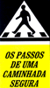

|
Departamento de Trânsito do Estado do Pará |
|
Departamento de Trânsito do Estado do Pará |
DIRETORIA
DE CONTROLE DE CONDUTORES
COORDENADORIA
DE EDUCAÇÃO
CAMPANHAS
EDUCATIVAS DE TRÂNSITO
| Atividades que se destinam ao público em geral (motoristas, pedestres, passageiros de transporte público e privado, policiais, ciclistas, etc.) e têm por objetivo promover a sensibilização e a reflexão em torno de valores que envolvem a segurança no trânsito. |
| Titulo: Ciclista
também é condutor de veículo Público alvo: Ciclistas motoristas e pedestres Objetivo: Orientar ciclistas quanto a comportamentos seguros no trânsito |
|
| Titulo:
Álcool?!!! Saia dessa... Público alvo: Motoristas Objetivo: Orientar quanto aos riscos de se dirigir embriagado e a responsabilidade criminal do condutor Material: Panfleto |
|
| Titulo: Semana
Nacional Educativa de Trânsito Público alvo: Motoristas, pedestres, passageiros, ciclistas, motociclistas, etc. Objetivo: Promover ampla convocação da sociedade quanto a necessidade de se discutir soluções para um trânsito mais humano Material: Cartaz, folder, panfleto |
|
| Titulo: Passarela
para pedestres Público alvo: pedestres Objetivo: Orientar pedestres quanto a comportamentos seguros a serem adotados no trânsito Material: Panfleto |
|
| Titulo: Carnaval Público alvo: Motoristas, passageiros, etc. Objetivo: Orientar pedestre quanto a procedimentos seguros a serem adotados no trânsito Material: Panfleto/"ventarolas" |
|
| Titulo: Semana
Santa Público alvo: Motoristas, passageiros, etc. Objetivo: Orientar quanto a procedimentos seguros a serem adotados no trânsito Material: Panfleto |
|
|  | Titulo: Os passos
de uma caminhada segura Público alvo: Pedestres e idosos Objetivo: Orientar quanto a procedimento seguros a serem adotados no trânsito Material: Panfleto |
| Titulo: Neste ano
não se esqueça do seu veículo Público alvo: Motoristas e proprietários de veículos Objetivo: Informar sobre o licenciamento anual dos veículos automotores Material: Panfleto |
|
| Titulo:
Condições adversas de tempo: chuva Público alvo: Motoristas Objetivo: Orientar quanto a procedimentos seguros a serem adotados quanto das condições adversas Material: Panfleto |
|
| Titulo:
Educação, Segurança e Cidadania no Trânsito Público alvo: Alunos da rede escolar oficial e particular Objetivo: Orientar quanto a procedimentos seguros a serem adotados no trânsito Material: Panfleto |
|
| Titulo:
Educação, Segurança e Cidadania no Trânsito Público alvo: Pais, professores, Técnicos e comunidade em geral Objetivo: Orientar quanto a procedimentos seguros a serem adotados visando a segurança no trânsito Material: Panfleto |
INDEX / PARÁ / PODER PÚBLICO / DADOS SÓCIO-ECONÔMICOS
CULTURA E TURISMO / PRINCIPAIS CIDADES / NOVIDADES